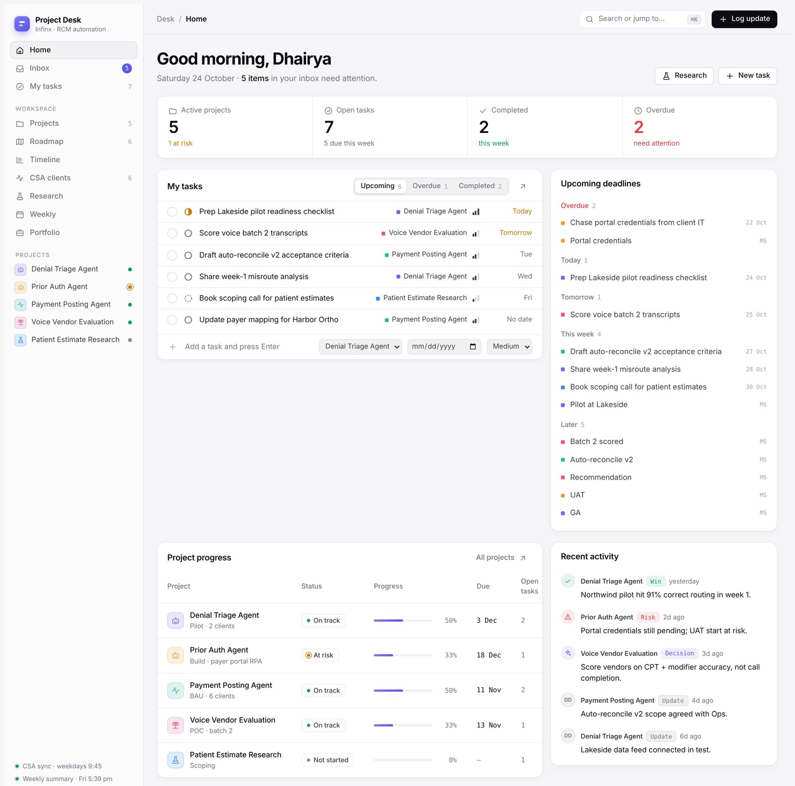
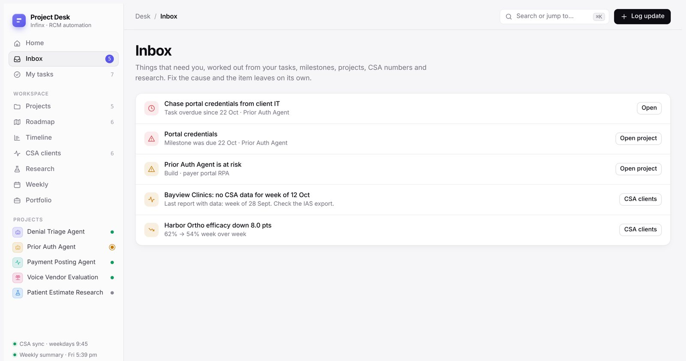
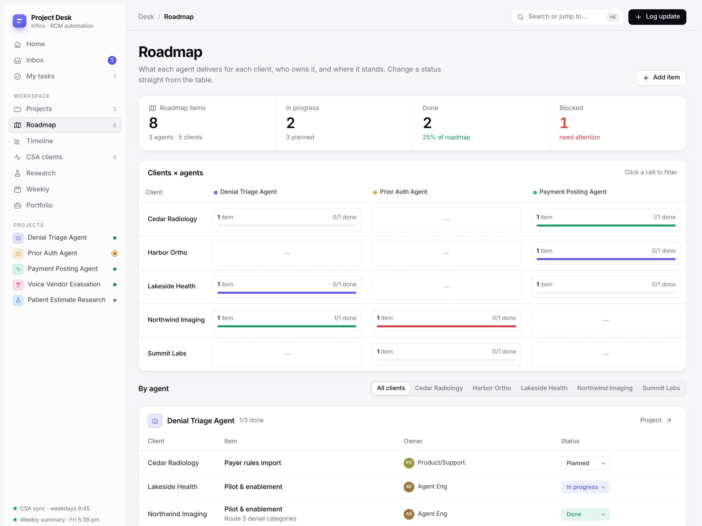
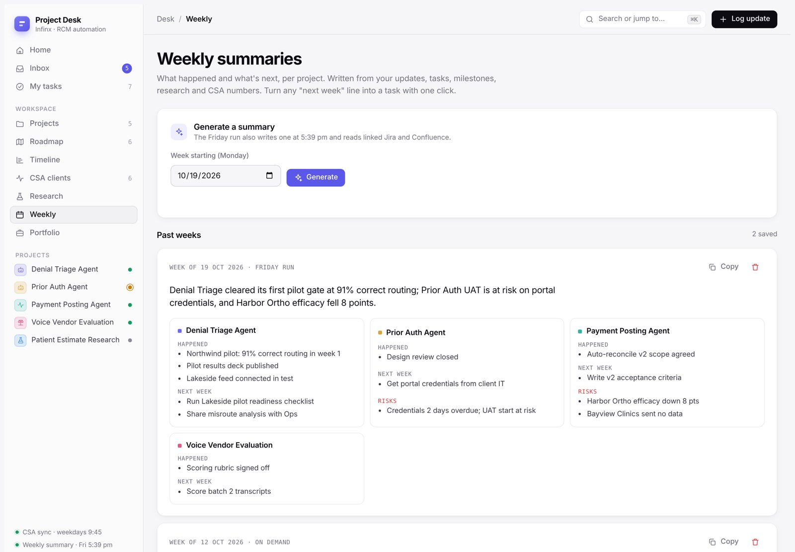
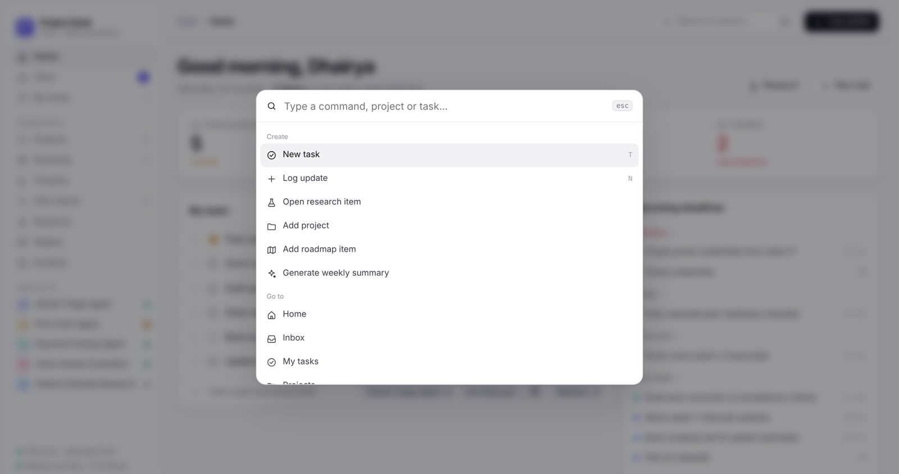
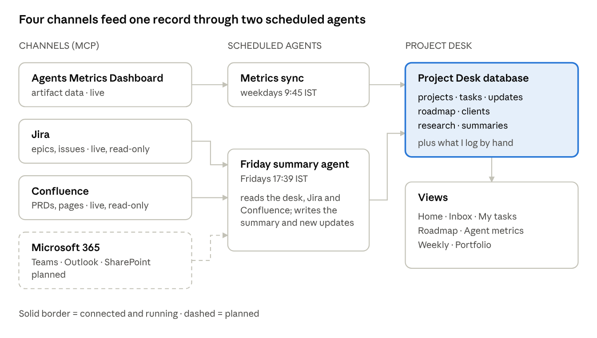
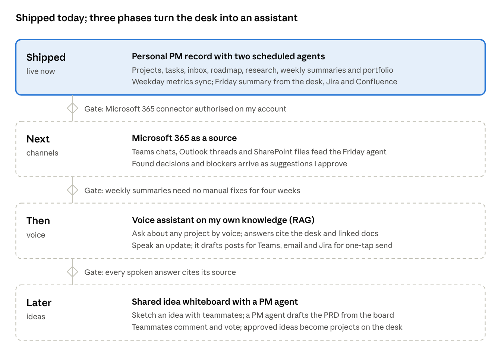

Project Desk — a PM operating system
One live page that holds every project, task, client metric, decision, research question and weekly summary I own — built with Claude in a few days, without an engineering ticket.
- Role
- Product owner, designer and builder
- Built with
- Claude, a hosted web app with its own database
- Kept current by
- Scheduled agents via MCP connectors
- Status
- In daily use
The tools my organisation already pays for couldn’t tell me — or my manager — what I actually did last week. Project Desk turns invisible PM work into a record I can measure, share and reuse, and it’s my answer to how a PM should work now that building a tool takes an afternoon.
Systems of record stop recording
Shared trackers fill up with tickets and pages nobody has touched in months, written by people who moved teams, for plans that changed. The real status of a project lives in people’s heads and in chat threads.
And most PM work never becomes a ticket or a page:
- Research and competitive analysis — a day comparing two vendors produces a decision, not an issue.
- Data analysis — the weekly funnel that explains why efficacy moved lives in a spreadsheet.
- Meetings and decisions — design calls that shape months of work are recorded nowhere.
- Unblocking — chasing an empty export or a missing credential keeps a rollout alive, and it’s invisible.
At the end of a week I couldn’t answer, with evidence, what moved, what I decided and what was at risk.
A forward-deployed PM juggles a lot
I take a problem, pull a few people from each team, and roll AI agents out for high-impact customers. At any moment that means:
I didn’t want another tool to update. I wanted one place that collects what already happens, tells me what needs attention, and writes the weekly story for me — so I built it the way I prototype everything: describe it, use it the same day, refine it from real use.
One app, nine views
I open it first thing every morning and it answers three questions: what needs me today, what moved, and what I should tell people. Screenshots use sample data.





Seven collections, three automations
The app is only the surface. Underneath, seven small collections hold the record — projects, updates, tasks, roadmap, clients, research and summaries — and three automations keep it current without me typing.
| Automation | When it runs | What it does |
|---|---|---|
| Metrics sync | Weekdays, 9:45 IST | Reads each client’s latest funnel run, computes access, efficacy and automation, keeps 26 weeks of history |
| Weekly summary | Fridays, 17:39 IST | Reads the whole desk plus linked tickets and pages, writes the week’s summary, logs real progress as updates |
| On-demand summary | When I click Generate | The same summary for any week, written in the browser by Claude from the desk’s data |

Two rules keep it honest: the agents only read the shared tools — they never create, edit or comment there — and the summary prompt forbids anything that isn’t in the data. If a project had no activity, it says so.
A personal system of truth, not another tracker
| Shared trackers & wikis | Project Desk | |
|---|---|---|
| Unit of work | A ticket or a page for someone else | A decision, task, finding or metric for me |
| Kept current by | Whoever remembers to | Agents sync it; I log in seconds |
| What ages out | Stale tickets and old pages linger | The inbox flags anything quiet for 14 days |
| Cross-project view | One board or space per team | Five projects, seven clients on one screen |
| Weekly status | Written by hand | Written by an agent from the record |
It doesn’t replace the shared tools — it reads them, looks only at what changed in the last seven days, and keeps only what is alive.
Measuring the work that never gets measured
Engineering output has commits and closed tickets; PM output mostly has nothing. Once research, decisions, analysis and unblocking are recorded, they can be counted — tasks closed, decisions made, research closed with findings, roadmap items moved and client metrics changed, per project, every week.
It turns “I was busy” into evidence I can bring to a review — and it’s the raw material for case studies like this one.
From a record I read to an assistant I talk to

- Next — Microsoft 365 as a source: decisions and blockers from project chats, client threads and shared spreadsheets, read-only and marked as suggestions when unsure.
- Then — Voice assistant with retrieval: ask “what’s blocking this project?”, speak an update on the drive home, and broadcast it to the right channels after one confirmation — every answer citing its source.
- Later — Idea whiteboard with a PM agent: sketch an idea with teammates, let an agent draft the PRD and ask about the gaps, and turn approved ideas into projects.
What every PM should do today
- Own your record — one place for projects, decisions, findings and numbers, trusted more than memory.
- Let agents do the upkeep — anything you copy between systems every week is a scheduled agent waiting to be written.
- Read the company’s tools, don’t live in them — pull what changed; ignore the archive.
- Make invisible work visible — log decisions, research and unblocking as you do them.
- Ship the tool like a product — use it the day you build it and add features only when real use asks.
Lessons so far
- Start from the data, not the screens — the polish came after real use showed what I looked at.
- Connect before you type — syncing client metrics removed the most tedious weekly step on day one.
- Keep agents read-only on shared systems — it’s what makes pointing them at shared tools safe.
- Write prompts that forbid invention — “no logged activity” beats a confident guess.
- Sample data in public, real data in private — the desk is private by default.